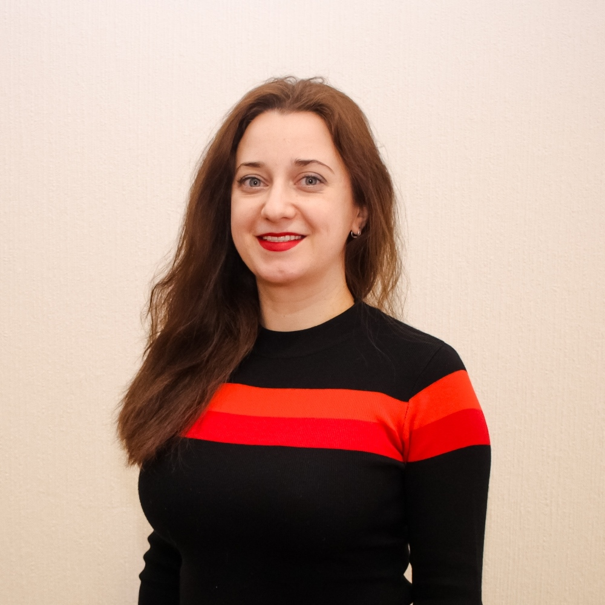
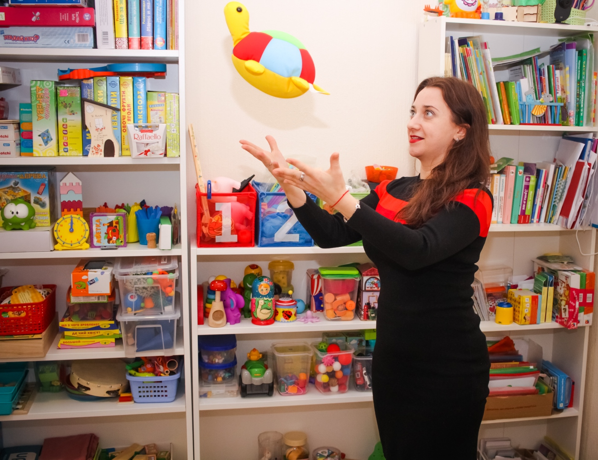

Контакти
Записатись на прийом
Напишіть або зателефонуйте — разом знайдемо найкращий час для вашої дитини. Приймаю у Празі та онлайн.
Фахова допомога дітям з порушеннями мовлення та розвитку. Сертифікований фахівець ADOS-2 · Олігофренопедагог


Я — Дар'я Кобякова, логопед-олігофренопедагог з понад 10-річним досвідом. Співзасновниця та методист корекційного центру STARTUM у Харкові. Зараз приймаю дітей у Празі.
Спеціалізуюся на роботі з дітьми з розладами аутистичного спектру (РАС), затримкою мовленнєвого та психічного розвитку, синдромом Дауна та іншими особливостями розвитку. Мій підхід — завжди індивідуальний, доказовий і з любов'ю до кожної дитини.
Постійно підвищую кваліфікацію, навчаюсь у провідних міжнародних фахівців. Сертифікований спеціаліст з діагностики ADOS-2 — стандарту "золотого рівня" для діагностики аутизму.
Комплексний підхід до корекції та розвитку дитини
Золотий стандарт діагностики розладів аутистичного спектру. Точна оцінка комунікативних навичок і поведінки дитини.
Постановка звуків, розвиток мовлення, корекція дислалії, дисграфії, дислексії. Від немовленнєвих дітей до школярів.
Розвиток пізнавальних процесів, уваги, пам'яті, мислення. Підготовка до школи для дітей з особливими потребами.
Запуск і розвиток мовлення у дітей з аутизмом. ABA-підхід, PECS, Floortime, розвиток комунікації.
Робота з дітьми від 1,5 року. Раннє виявлення та корекція порушень розвитку — ключ до найкращого результату.
Дистанційна діагностика, консультації для батьків, онлайн-заняття. Доступно з будь-якої точки світу.
Використовую лише науково обґрунтовані, доказові методики міжнародного рівня
Autism Diagnostic Observation Schedule — золотий стандарт діагностики РАС. Структуроване напівстандартизоване спостереження, що дозволяє точно оцінити соціальну взаємодію, комунікацію та поведінку дитини.
Applied Behavior Analysis — поведінкова терапія, найефективніший науково доведений метод корекції аутизму та розвитку функціональних навичок.
Picture Exchange Communication System — система комунікації з використанням карток для дітей з обмеженим або відсутнім мовленням.
Developmental Individual Difference Relationship-based Model — ігрова терапія, що розвиває емоційний інтелект та комунікацію через взаємодію.
Аудіо-вокальні тренування для розвитку слухового сприйняття, мовлення, концентрації уваги та оперативної пам'яті.
Терапевтичний підхід для дітей із сенсорною дисрегуляцією. Допомагає мозку правильно обробляти сенсорну інформацію.
Засоби і стратегії альтернативної та додаткової комунікації: від жестів і карток до High-tech пристроїв та додатків.
Основний метод роботи з дітьми від 2 до 12 років. Через гру дитина вчиться спілкуватися, встановлювати правила та будувати стосунки.
Комп'ютеризована діагностика СДУГ (синдрому дефіциту уваги та гіперактивності) з точністю 95%. Визнана в Ізраїлі, США та Європі.
Мануальний логомасаж та зондовий масаж для корекції м'язового тонусу артикуляційного апарату при дизартрії та порушеннях звуковимови.
Аналіз вербальної поведінки за Скіннером — ефективний підхід для запуску і розвитку функціонального мовлення у дітей з РАС.
Втручання з розвитку відносин — метод, що допомагає дітям з аутизмом розвивати динамічне мислення та гнучкість.
Діти з розладами аутистичного спектру різного рівня. Діагностика ADOS-2, запуск мовлення, соціальна адаптація.
Затримка психічного та мовленнєвого розвитку. Розвиток пізнавальних процесів та комунікативних навичок.
Мовленнєва корекція, розвиток інтелектуальних навичок, підготовка до навчання та соціальна інтеграція.
Синдром дефіциту уваги та гіперактивності. Діагностика MOXO, розвиток довільної уваги, поведінкова корекція.
Порушення звуковимови — від простих дефектів до складних форм дизартрії при неврологічних патологіях.
Порушення читання та письма у дітей шкільного віку. Нейропсихологічний підхід до корекції.
Напишіть або зателефонуйте — разом знайдемо найкращий час для вашої дитини. Приймаю у Празі та онлайн.